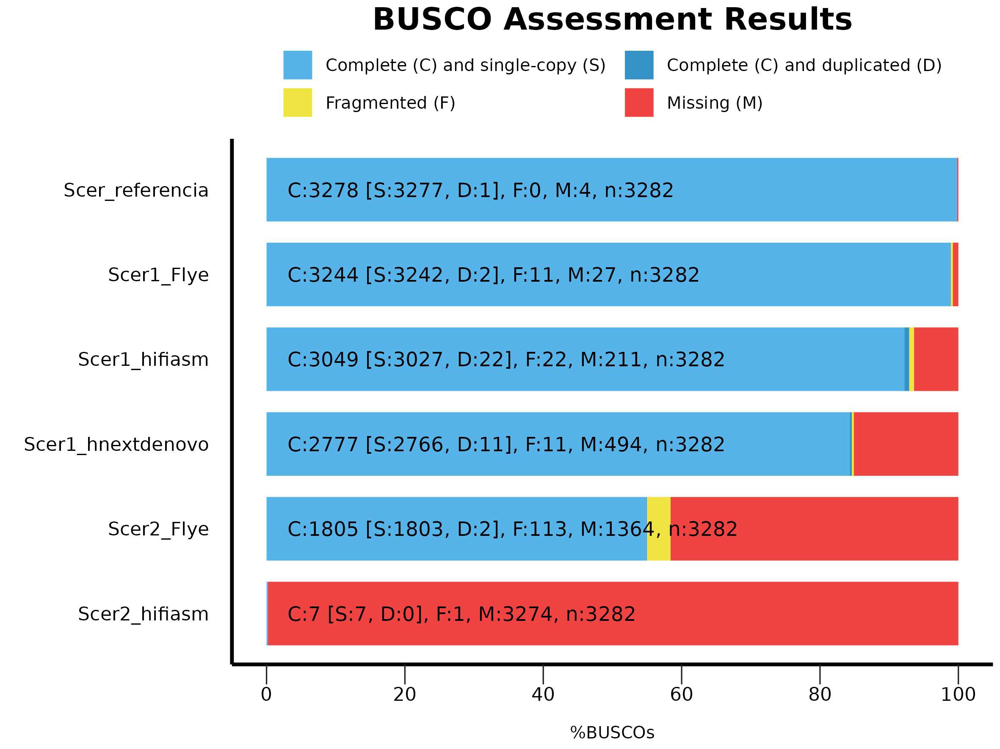
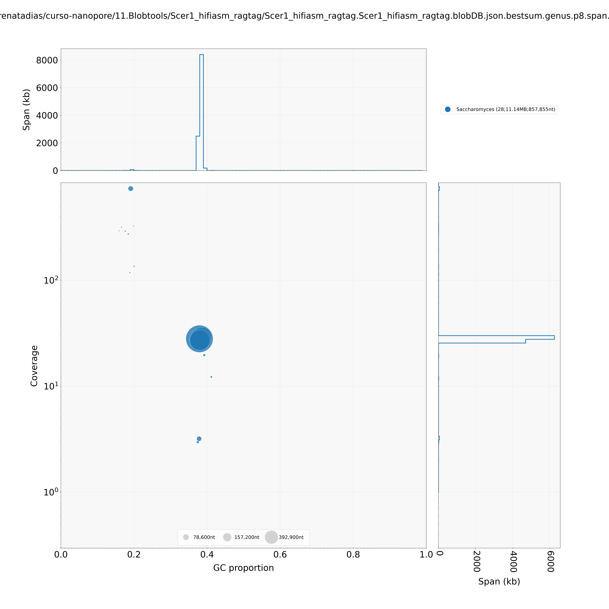
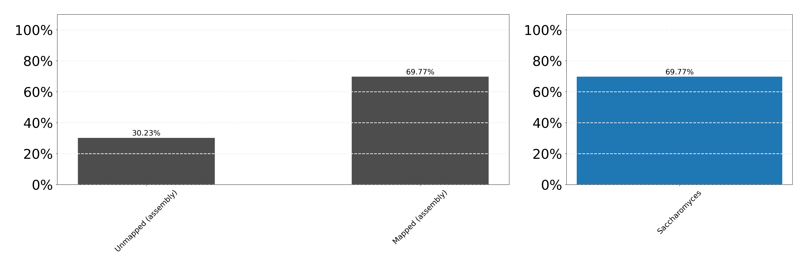

Montagem de genomas com dados Nanopore¶
Resumo
Tutorial prático de montagem de novo de genomas a partir de dados de sequenciamento Oxford Nanopore Technology (ONT). Cobrimos o pipeline completo: download dos dados públicos, controle de qualidade, filtragem, descontaminação, três estratégias de montagem (Flye, Hifiasm, NextDenovo), polimento (Medaka), scaffolding (RagTag e LongStitch), avaliação comparativa em todas as fases (QUAST, Merqury, BUSCO) e checagem final de contaminantes (BlobTools).
Autora: Profa. Renata de Oliveira Dias Instituição: Laboratório de Genética & Biodiversidade (LGBio) — ICB/UFG Contato: renata_dias@ufg.br Última atualização: Junho de 2026
Objetivos de aprendizagem¶
Ao final deste curso, você será capaz de:
- Baixar dados públicos de sequenciamento ONT de bancos como SRA/ENA
- Avaliar qualidade de leituras longas com NanoPlot
- Remover adaptadores (Porechop_ABI) e filtrar por qualidade/tamanho (Chopper)
- Identificar e remover contaminantes com Kraken2
- Estimar parâmetros do genoma a partir de k-mers (GenomeScope2)
- Executar montagens de novo com Flye, Hifiasm e NextDenovo
- Polir montagens com Medaka
- Realizar scaffolding com e sem genoma de referência (RagTag, LongStitch)
- Avaliar e comparar a qualidade de múltiplas versões com QUAST, Merqury e BUSCO
Carga horária estimada¶
~12 horas
Pré-requisitos¶
| Item | Detalhes |
|---|---|
| Curso anterior | Bash / Linux para bioinformática |
| Biologia molecular | Conceitos de sequenciamento, genoma, contig, scaffold |
| Softwares | SRA Toolkit, NanoPlot, Porechop_ABI, Chopper, Kraken2, Meryl, GenomeScope2, Flye, Hifiasm, NextDenovo, Medaka, RagTag, LongStitch, QUAST, Merqury, BUSCO, BlobTools |
| Recurso | Servidor Linux com ≥ 32 GB RAM, ≥ 24 threads, ≥ 250 GB de storage |
Compatibilidade com outros servidores
Este pipeline foi desenvolvido e testado no servidor de Bioinformática do LGBio (ICB/UFG). Ao reproduzi-lo em outro ambiente, podem ser necessários ajustes em caminhos de instalação, gerenciadores de ambiente (conda, module load), versões de software e parâmetros de memória/threads.
Dados do exercício¶
Usamos duas amostras de Saccharomyces cerevisiae sequenciadas com PromethION, depositadas no projeto PRJEB77686 (ScRAP — S. cerevisiae Reference Assembly Panel) do estudo de Loegler et al. (2025).
| Amostra | Accession | Linhagem | Bases | Read N50 |
|---|---|---|---|---|
| Scer1 | ERR13367646 | CBS7963 | ~1 Gb | 5.592 bp |
| Scer2 | ERR13375657 | SM.9.1.AL1 | ~108 Mb | 1.865 bp |
Atenção à cobertura
A amostra Scer2 tem cobertura muito baixa (~3×) e não é adequada para montagem de qualidade publicável. Ela está incluída para fins didáticos — comparar como os montadores e ferramentas de polimento/scaffolding se comportam quando os dados são limitantes.
Referência
Loegler V. et al. From genotype to phenotype with 1,086 near telomere-to-telomere yeast genomes. Nature (2025). DOI: 10.1038/s41586-025-08616-z
Acesso aos resultados pré-computados¶
Não conseguiu rodar localmente? Você pode baixar diretamente os principais outputs gerados por este tutorial:
-
Relatórios de QC
NanoPlot (bruto e filtrado), GenomeScope2
-
Contaminantes (Kraken2)
Relatórios taxonômicos das duas amostras
-
Avaliação das montagens
QUAST, Merqury, BUSCO
Etapa 1 — Obtenção dos dados públicos¶
Os dados estão disponíveis no ENA e no SRA. Mostramos duas opções: via SRA Toolkit (controlado e robusto) e via wget direto do ENA (mais simples).
mkdir 0.DadosBrutos
prefetch ERR13367646 -O 0.DadosBrutos
fasterq-dump ERR13367646 --outdir 0.DadosBrutos --outfile Scer1.fastq --progress \
&& gzip 0.DadosBrutos/Scer1.fastq
prefetch ERR13375657 -O 0.DadosBrutos
fasterq-dump ERR13375657 --outdir 0.DadosBrutos --outfile Scer2.fastq --progress \
&& gzip 0.DadosBrutos/Scer2.fastq
mkdir 0.DadosBrutos
wget -P 0.DadosBrutos ftp://ftp.sra.ebi.ac.uk/vol1/fastq/ERR133/046/ERR13367646/ERR13367646.fastq.gz
wget -P 0.DadosBrutos ftp://ftp.sra.ebi.ac.uk/vol1/fastq/ERR133/057/ERR13375657/ERR13375657.fastq.gz
mv 0.DadosBrutos/ERR13367646.fastq.gz 0.DadosBrutos/Scer1.fastq.gz
mv 0.DadosBrutos/ERR13375657.fastq.gz 0.DadosBrutos/Scer2.fastq.gz
Verificar integridade após o download¶
gzip -t 0.DadosBrutos/Scer1.fastq.gz && echo "OK" || echo "CORROMPIDO"
gzip -t 0.DadosBrutos/Scer2.fastq.gz && echo "OK" || echo "CORROMPIDO"
Checklist da Etapa 1¶
- Tenho
0.DadosBrutos/Scer1.fastq.gze0.DadosBrutos/Scer2.fastq.gz - Confirmei integridade com
gzip -t
Etapa 2 — QC dos dados brutos (NanoPlot)¶
mkdir 1.QC_dadosbrutos/
NanoPlot --fastq 0.DadosBrutos/Scer1.fastq.gz -o 1.QC_dadosbrutos/ --prefix Scer1_ --threads 20 --loglength
NanoPlot --fastq 0.DadosBrutos/Scer2.fastq.gz -o 1.QC_dadosbrutos/ --prefix Scer2_ --threads 20 --loglength
O que observar
- N50 — tamanho da leitura mediana ponderada. Quanto maior, melhor para montagem.
- Mean quality — Q ≥ 10 é aceitável para Nanopore R9.4.
- Total bases — cobertura estimada (dividir pelo tamanho do genoma, ~12 Mb).
- Compare Scer1 (~83×) e Scer2 (~9×) — a diferença vai impactar diretamente a qualidade das montagens.
Resultados pré-computados
Scer1_NanoStats.txt · Scer2_NanoStats.txt · Relatório NanoPlot Scer1 (HTML) · Relatório NanoPlot Scer2 (HTML)
Checklist da Etapa 2¶
- Examinei
Scer1_NanoStats.txteScer2_NanoStats.txt - Anotei N50, qualidade média e cobertura estimada
Etapa 3 — Filtragem dos dados brutos¶
3.1 Remoção de adaptadores (Porechop_ABI)¶
Sobre os avisos do Porechop_ABI
Mensagens "this file is already trimmed" indicam que o basecaller já removeu parte dos adaptadores. O Porechop_ABI ainda consegue remover resíduos remanescentes — em ambas as amostras, adaptadores SQK-NSK007 foram encontrados e removidos.
mkdir 2.Filtragem-dadosbrutos
conda activate porechop_abi_env
porechop_abi -abi -i 0.DadosBrutos/Scer1.fastq.gz \
-o 2.Filtragem-dadosbrutos/Scer1_trim.fastq.gz \
--format fastq -t 20
porechop_abi -abi -i 0.DadosBrutos/Scer2.fastq.gz \
-o 2.Filtragem-dadosbrutos/Scer2_trim.fastq.gz \
--format fastq -t 20
conda deactivate
Resumo da remoção de adaptadores
Scer1:
40.770 / 349.324 reads tiveram adaptadores removidos do início (572.257 bp)
55.520 / 349.324 reads tiveram adaptadores removidos do fim (860.293 bp)
739 / 349.324 reads foram divididas por adaptadores no meio
Adaptador identificado: SQK-NSK007 (96,6% identidade)
Scer2:
3.2 Filtro por qualidade e tamanho (Chopper)¶
| Parâmetro | Valor | Justificativa |
|---|---|---|
-q 10 |
Phred ≥ 10 | Remove reads com >10% de erro estimado |
-l 500 |
≥ 500 bp | Remove reads curtas que prejudicam a montagem |
chopper -q 10 -l 500 -t 32 < 2.Filtragem-dadosbrutos/Scer1_trim.fastq.gz \
| gzip > 2.Filtragem-dadosbrutos/Scer1_q10_l500.fastq.gz
chopper -q 10 -l 500 -t 32 < 2.Filtragem-dadosbrutos/Scer2_trim.fastq.gz \
| gzip > 2.Filtragem-dadosbrutos/Scer2_q10_l500.fastq.gz
Resultado esperado
| Amostra | Reads antes | Reads depois | Taxa de retenção |
|---|---|---|---|
| Scer1 | 349.234 | 230.433 | 66% |
| Scer2 | 57.792 | 33.007 | 57% |
Checklist da Etapa 3¶
- Tenho
Scer1_trim.fastq.gzeScer2_trim.fastq.gz - Tenho
Scer1_q10_l500.fastq.gzeScer2_q10_l500.fastq.gz
Etapa 4 — Remoção de contaminantes (Kraken2)¶
Limitação do banco minikraken2
Inclui apenas bactérias, vírus e humanos. Para confirmar que as reads não classificadas são de fato de levedura, seria necessário um banco que inclua fungos (ex.: PlusPF).
mkdir 3.Descontaminacao
kraken2 --db /home/lgbio/lgbio_database/minikraken2_v2_8GB_201904_UPDATE \
--threads 20 --gzip-compressed \
--output 3.Descontaminacao/Scer1_kraken.out \
--report 3.Descontaminacao/Scer1_kraken_report.txt \
--unclassified-out /dev/stdout \
2.Filtragem-dadosbrutos/Scer1_q10_l500.fastq.gz \
| gzip > 3.Descontaminacao/Scer1_clean.fastq.gz
kraken2 --db /home/lgbio/lgbio_database/minikraken2_v2_8GB_201904_UPDATE \
--threads 20 --gzip-compressed \
--output 3.Descontaminacao/Scer2_kraken.out \
--report 3.Descontaminacao/Scer2_kraken_report.txt \
--unclassified-out /dev/stdout \
2.Filtragem-dadosbrutos/Scer2_q10_l500.fastq.gz \
| gzip > 3.Descontaminacao/Scer2_clean.fastq.gz
Resultados — Análise dos contaminantes¶
| Amostra | Reads totais | Classificadas | DNA humano | B. cereus |
|---|---|---|---|---|
| Scer1 | 230.433 | 34,03% | 23,54% | 7,65% |
| Scer2 | 33.007 | 32,47% | 24,63% | 5,21% |
O principal contaminante foi DNA humano (~24%) — contaminação típica de manipulação laboratorial. O segundo foi Bacillus cereus (5–8%), bacilo comum em laboratório. Os ~66% não classificados são as leituras de levedura — o que queremos preservar.
Resultados pré-computados
Checklist da Etapa 4¶
- Tenho
Scer1_clean.fastq.gzeScer2_clean.fastq.gz - Examinei os top organismos contaminantes
Etapa 5 — QC dos dados filtrados¶
5.1 NanoPlot pós-filtragem¶
mkdir 4.QC_dadosfiltrados/
NanoPlot --fastq 3.Descontaminacao/Scer1_clean.fastq.gz -o 4.QC_dadosfiltrados/ --prefix Scer1_clean_ --threads 20 --loglength
NanoPlot --fastq 3.Descontaminacao/Scer2_clean.fastq.gz -o 4.QC_dadosfiltrados/ --prefix Scer2_clean_ --threads 20 --loglength
Comparação antes vs. após filtragem
| Métrica | Scer1 bruto | Scer1 filtrado | Scer2 bruto | Scer2 filtrado |
|---|---|---|---|---|
| Número de reads | 349.324 | 152.028 | 57.918 | 22.289 |
| Total de bases | ~1 Gb | 480 Mb | ~108 Mb | 46 Mb |
| Mean quality | 11,6 | 13,2 | 13,2 | 13,2 |
| Read N50 | 5.592 bp | 4.994 bp | 1.865 bp | 2.854 bp |
| Reads mantidas | — | 43,5% | — | 38,5% |
Resultados pré-computados
NanoPlot Scer1 filtrado (HTML) · NanoPlot Scer2 filtrado (HTML)
5.2 Análise de k-mers (Meryl + GenomeScope2)¶
# Contagem de k-mers (k=31)
meryl k=31 memory=24 threads=20 count 3.Descontaminacao/Scer1_clean.fastq.gz output 4.QC_dadosfiltrados/Scer1_clean_trim.meryl
meryl k=31 memory=24 threads=20 count 3.Descontaminacao/Scer2_clean.fastq.gz output 4.QC_dadosfiltrados/Scer2_clean_trim.meryl
# Histograma para o GenomeScope
meryl histogram 4.QC_dadosfiltrados/Scer1_clean_trim.meryl | sed 's/\t/ /g' > 4.QC_dadosfiltrados/Scer1_clean.hist
meryl histogram 4.QC_dadosfiltrados/Scer2_clean_trim.meryl | sed 's/\t/ /g' > 4.QC_dadosfiltrados/Scer2_clean.hist
# Rodar GenomeScope2
conda activate genomescope2_env
genomescope2 -i 4.QC_dadosfiltrados/Scer1_clean.hist -o 4.QC_dadosfiltrados/Scer1_genomescope -k 21 -p 2 --name_prefix "Scer1_Oxford_Nanopore"
genomescope2 -i 4.QC_dadosfiltrados/Scer2_clean.hist -o 4.QC_dadosfiltrados/Scer2_genomescope -k 21 -p 2 --name_prefix "Scer2_Oxford_Nanopore"
conda deactivate
Interpretando o GenomeScope2
| Amostra | Genoma estimado | Heterozigosidade | Erro | Model fit |
|---|---|---|---|---|
| Scer1 | ~11 Mb | 0,7% | 3,3% | 0,83 (bom) |
| Scer2 | ~15 kb (?) | 6,9% | 15,8% | 4,86 (ruim) |
Scer2 com model fit muito alto = resultado não confiável (esperado com ~3× de cobertura).
Resultados pré-computados
Checklist da Etapa 5¶
- Comparei estatísticas NanoPlot antes/após filtragem
- Tenho gráficos GenomeScope das duas amostras
- Confirmei tamanho do genoma estimado para Scer1 (~11–12 Mb)
Etapa 6 — Montagem com Flye¶
mkdir -p 5.Montagem-Flye/Scer1 5.Montagem-Flye/Scer2
conda activate flye_env
flye --genome-size 12M --scaffold --nano-hq 3.Descontaminacao/Scer1_clean.fastq.gz \
-o 5.Montagem-Flye/Scer1 -t 24
flye --genome-size 12M --scaffold --nano-hq 3.Descontaminacao/Scer2_clean.fastq.gz \
-o 5.Montagem-Flye/Scer2 -t 24
conda deactivate
Estatísticas finais das montagens Flye
Scer1 — Flye: 11.794.776 bp · 126 contigs · N50 = 298.282 bp · Cobertura = 42× Scer2 — Flye: 6.822.332 bp · 690 contigs · N50 = 13.152 bp · Cobertura = 5×
FASTAs disponíveis no repositório
Checklist da Etapa 6¶
- Tenho
assembly.fastapara Scer1 e Scer2
Etapa 7 — Montagem com Hifiasm¶
mkdir 6.Montagem-hifiasm
hifiasm -o 6.Montagem-hifiasm/Scer1_hifiasm -t 12 --primary --write-ec \
--ont 3.Descontaminacao/Scer1_clean.fastq.gz 2> 6.Montagem-hifiasm/Scer1_hifiasm.log
hifiasm -o 6.Montagem-hifiasm/Scer2_hifiasm -t 12 --primary --write-ec \
--ont 3.Descontaminacao/Scer2_clean.fastq.gz 2> 6.Montagem-hifiasm/Scer2_hifiasm.log
Converter GFA para FASTA¶
awk '/^S/{print ">"$2"\n"$3}' 6.Montagem-hifiasm/Scer1_hifiasm.p_ctg.gfa > 6.Montagem-hifiasm/Scer1_hifiasm.p_ctg.fa
awk '/^S/{print ">"$2"\n"$3}' 6.Montagem-hifiasm/Scer2_hifiasm.p_ctg.gfa > 6.Montagem-hifiasm/Scer2_hifiasm.p_ctg.fa
FASTAs disponíveis no repositório
Etapa 8 — Montagem com NextDenovo¶
Configuração¶
mkdir -p 7.Montagem-NextDenovo/Scer1
realpath 3.Descontaminacao/Scer1_clean.fastq.gz > 7.Montagem-NextDenovo/Scer1/input.fofn
cp /home/lgbio/programas/NextDenovo/doc/run.cfg 7.Montagem-NextDenovo/Scer1/.
nano 7.Montagem-NextDenovo/Scer1/run.cfg
No editor, ajuste:
Comando para rodar¶
NextDenovo na Scer2
Com Scer2 (~3× cobertura), o NextDenovo aborta com erro:
Decisão pedagógica importante: o NextDenovo recusa gerar montagem ruim. Compare com Flye (monta com aviso) e Hifiasm (monta silenciosamente).
FASTA disponível no repositório
Etapa 9 — Avaliação inicial das montagens¶
| Ferramenta | O que avalia |
|---|---|
| QUAST | Contiguidade, tamanho, erros em relação à referência |
| Merqury | Qualidade de bases (QV) e completude por k-mers |
| BUSCO | Completude de genes conservados |
Baixar o genoma de referência¶
datasets download genome accession GCF_000146045.2 --include genome --filename Scer_reference.zip
unzip Scer_reference.zip
9.1 QUAST¶
quast.py -r ncbi_dataset/data/GCF_000146045.2/GCF_000146045.2_R64_genomic.fna \
5.Montagem-Flye/Scer1/assembly.fasta \
5.Montagem-Flye/Scer2/assembly.fasta \
6.Montagem-hifiasm/Scer1_hifiasm.p_ctg.fa \
6.Montagem-hifiasm/Scer2_hifiasm.p_ctg.fa \
7.Montagem-NextDenovo/Scer1/01_rundir/03.ctg_graph/nd.asm.fasta \
-o 8.QC_montagens/quast -t 24 \
--labels "Scer1_Flye,Scer2_Flye,Scer1_Hifiasm,Scer2_Hifiasm,Scer1_NextDenovo"
Relatórios pré-computados
QUAST report.html · QUAST icarus.html (navegador de contigs) · QUAST report.tsv
9.2 Merqury¶
mkdir 8.QC_montagens/merqury
cd 8.QC_montagens/merqury
merqury.sh ../../4.QC_dadosfiltrados/Scer1_clean_trim.meryl ../../5.Montagem-Flye/Scer1/assembly.fasta Scer1_Flye
merqury.sh ../../4.QC_dadosfiltrados/Scer2_clean_trim.meryl ../../5.Montagem-Flye/Scer2/assembly.fasta Scer2_Flye
merqury.sh ../../4.QC_dadosfiltrados/Scer1_clean_trim.meryl ../../6.Montagem-hifiasm/Scer1_hifiasm.p_ctg.fa Scer1_hifiasm
merqury.sh ../../4.QC_dadosfiltrados/Scer2_clean_trim.meryl ../../6.Montagem-hifiasm/Scer2_hifiasm.p_ctg.fa Scer2_hifiasm
merqury.sh ../../4.QC_dadosfiltrados/Scer1_clean_trim.meryl ../../7.Montagem-NextDenovo/Scer1/01_rundir/03.ctg_graph/nd.asm.fasta Scer1_nextdenovo
cd ../..
Resultados Merqury (Etapa 9)
| Sample | QV | Error rate | Completeness |
|---|---|---|---|
| Scer1_Flye | 39,80 | 1,0 × 10⁻⁴ | 97,97% |
| Scer2_Flye | 19,87 | 1,0 × 10⁻² | 81,77% |
| Scer1_hifiasm | 43,64 | 4,3 × 10⁻⁵ | 94,09% |
| Scer2_hifiasm | 34,48 | 3,6 × 10⁻⁴ | 84,65% |
| Scer1_nextdenovo | 39,75 | 1,1 × 10⁻⁴ | 84,45% |
Resultados pré-computados
9.3 BUSCO¶
# Para S. cerevisiae, usar saccharomycetaceae_odb12
busco -i ncbi_dataset/data/GCF_000146045.2/GCF_000146045.2_R64_genomic.fna -l saccharomycetaceae_odb12 -m genome -o 8.QC_montagens/BUSCO/Scer_referencia
busco -i 5.Montagem-Flye/Scer1/assembly.fasta -l saccharomycetaceae_odb12 -m genome -o 8.QC_montagens/BUSCO/Scer1_Flye
busco -i 5.Montagem-Flye/Scer2/assembly.fasta -l saccharomycetaceae_odb12 -m genome -o 8.QC_montagens/BUSCO/Scer2_Flye
busco -i 6.Montagem-hifiasm/Scer1_hifiasm.p_ctg.fa -l saccharomycetaceae_odb12 -m genome -o 8.QC_montagens/BUSCO/Scer1_hifiasm
busco -i 6.Montagem-hifiasm/Scer2_hifiasm.p_ctg.fa -l saccharomycetaceae_odb12 -m genome -o 8.QC_montagens/BUSCO/Scer2_hifiasm
busco -i 7.Montagem-NextDenovo/Scer1/01_rundir/03.ctg_graph/nd.asm.fasta -l saccharomycetaceae_odb12 -m genome -o 8.QC_montagens/BUSCO/Scer1_nextdenovo
Resultados BUSCO (Etapa 9)
| Montagem | Complete (C) | Single (S) | Duplicated (D) | Fragmented (F) | Missing (M) |
|---|---|---|---|---|---|
| Scer1_Flye | 98,8% | 98,8% | 0,1% | 0,3% | 0,8% |
| Scer2_Flye | 55,0% | 54,9% | 0,1% | 3,4% | 41,6% |
| Scer1_hifiasm | 92,9% | 92,2% | 0,7% | 0,7% | 6,4% |
| Scer2_hifiasm | 0,2% | 0,2% | 0,0% | 0,0% | 99,8% |
| Scer1_nextdenovo | 84,6% | 84,3% | 0,3% | 0,3% | 15,1% |
Resumos BUSCO pré-computados
Gerar gráfico comparativo BUSCO¶
mkdir 8.QC_montagens/BUSCO/summaries
cp 8.QC_montagens/BUSCO/*/short_summary*.txt 8.QC_montagens/BUSCO/summaries/
conda activate busco
python /home/lgbio/busco/scripts/generate_plot.py -wd 8.QC_montagens/BUSCO/summaries/
Checklist da Etapa 9¶
- Tenho relatórios QUAST (HTML)
- Tenho
merqury_summary.tsv - Tenho BUSCO
short_summaryde cada montagem e da referência
Etapa 10 — Polimento com Medaka¶
O Medaka é uma ferramenta de polimento desenvolvida pela ONT que usa redes neurais treinadas em dados Nanopore para corrigir bases incertas nas montagens.
Identificar o equipamento e modelo correto¶
# Ver o header das reads pra identificar o flowcell/kit
zcat 0.DadosBrutos/Scer1.fastq.gz | head -1
zcat 0.DadosBrutos/Scer2.fastq.gz | head -1
Saída esperada
@ERR13367646.1 ch1252_read6_c2980bb1-...-bf2f96d18a28_fail_PAG90098 length=444
@ERR13375657.1 ch627_read31_20a0a16c-...-83fe876f3727_fail_PAK00454 length=396
O código PAG* indica PromethION R9.4.1 (Scer1) e PAK* indica PromethION R10.4.1 (Scer2). Cada flowcell exige um modelo Medaka específico.
Listar modelos disponíveis¶
Rodar o Medaka¶
mkdir 9.Polimento-Medaka/
# Para R9.4.1 (Scer1):
medaka_consensus -i 3.Descontaminacao/Scer1_clean.fastq.gz \
-d 5.Montagem-Flye/Scer1/assembly.fasta \
-o 9.Polimento-Medaka/Scer1_Flye -t 24 -m r941_prom_hac_g507
medaka_consensus -i 3.Descontaminacao/Scer1_clean.fastq.gz \
-d 6.Montagem-hifiasm/Scer1_hifiasm.p_ctg.fa \
-o 9.Polimento-Medaka/Scer1_hifiasm -t 24 -m r941_prom_hac_g507
medaka_consensus -i 3.Descontaminacao/Scer1_clean.fastq.gz \
-d 7.Montagem-NextDenovo/Scer1/01_rundir/03.ctg_graph/nd.asm.fasta \
-o 9.Polimento-Medaka/Scer1_nextdenovo -t 24 -m r941_prom_hac_g507
# Para R10.4.1 (Scer2):
medaka_consensus -i 3.Descontaminacao/Scer2_clean.fastq.gz \
-d 5.Montagem-Flye/Scer2/assembly.fasta \
-o 9.Polimento-Medaka/Scer2_Flye -t 24 -m r1041_e82_400bps_hac_g615
medaka_consensus -i 3.Descontaminacao/Scer2_clean.fastq.gz \
-d 6.Montagem-hifiasm/Scer2_hifiasm.p_ctg.fa \
-o 9.Polimento-Medaka/Scer2_hifiasm -t 24 -m r1041_e82_400bps_hac_g615
Atenção ao modelo do Medaka
Usar o modelo errado pode piorar a montagem em vez de melhorar. Sempre confira o header das reads e use:
| Flowcell | Basecaller | Modelo Medaka |
|---|---|---|
| R9.4.1 + Guppy | hac_g507 | r941_prom_hac_g507 |
| R10.4.1 + Dorado | e82 | r1041_e82_400bps_hac_g615 |
Checklist da Etapa 10¶
- Identifiquei o modelo Medaka correto para cada amostra
- Tenho
consensus.fastapolido em9.Polimento-Medaka/<sample>_<assembler>/
Etapa 11 — QC após polimento¶
Repetimos QUAST, Merqury e BUSCO comparando antes e depois do polimento.
11.1 QUAST pós-polimento¶
quast.py -r ncbi_dataset/data/GCF_000146045.2/GCF_000146045.2_R64_genomic.fna -s \
5.Montagem-Flye/Scer1/assembly.fasta \
5.Montagem-Flye/Scer2/assembly.fasta \
6.Montagem-hifiasm/Scer1_hifiasm.p_ctg.fa \
6.Montagem-hifiasm/Scer2_hifiasm.p_ctg.fa \
7.Montagem-NextDenovo/Scer1/01_rundir/03.ctg_graph/nd.asm.fasta \
9.Polimento-Medaka/Scer1_Flye/consensus.fasta \
9.Polimento-Medaka/Scer2_Flye/consensus.fasta \
9.Polimento-Medaka/Scer1_hifiasm/consensus.fasta \
9.Polimento-Medaka/Scer2_hifiasm/consensus.fasta \
9.Polimento-Medaka/Scer1_nextdenovo/consensus.fasta \
-o 8.QC_montagens/quast-medaka -t 24 \
--labels "Scer1_Flye,Scer2_Flye,Scer1_Hifiasm,Scer2_Hifiasm,Scer1_NextDenovo,Scer1_Flye_medaka,Scer2_Flye_medaka,Scer1_Hifiasm_medaka,Scer2_Hifiasm_medaka,Scer1_NextDenovo_medaka"
Resumo QUAST (com e sem Medaka)
Mudanças mínimas em N50 e tamanho total. O polimento corrige bases individuais mas não muda a topologia da montagem.
11.2 Merqury pós-polimento¶
cd 8.QC_montagens/merqury
for sample in Scer1_Flye_medaka Scer1_hifiasm_medaka Scer1_nextdenovo_medaka; do
mkdir -p $sample && cd $sample
merqury.sh ../../../4.QC_dadosfiltrados/Scer1_clean_trim.meryl \
../../../9.Polimento-Medaka/${sample%_medaka}/consensus.fasta \
$sample
cd ..
done
for sample in Scer2_Flye_medaka Scer2_hifiasm_medaka; do
mkdir -p $sample && cd $sample
merqury.sh ../../../4.QC_dadosfiltrados/Scer2_clean_trim.meryl \
../../../9.Polimento-Medaka/${sample%_medaka}/consensus.fasta \
$sample
cd ..
done
Merqury — antes vs. depois do Medaka
| Sample | QV antes | QV depois | Mudança |
|---|---|---|---|
| Scer1_Flye | 39,80 | 38,94 | ▼ -0,86 |
| Scer2_Flye | 19,87 | 24,03 | ▲ +4,16 |
| Scer1_hifiasm | 43,64 | 39,95 | ▼ -3,69 |
| Scer2_hifiasm | 34,48 | 32,63 | ▼ -1,85 |
| Scer1_nextdenovo | 39,75 | 38,29 | ▼ -1,46 |
Quando o Medaka NÃO melhora
Em dados R9.4.1 com montadores que já fazem polimento interno (Flye, Hifiasm), o ganho do Medaka pode ser marginal ou até negativo. O Medaka é mais útil em dados R10.4+ (note como Scer2 melhorou QV em +4!) ou com montadores sem polimento interno. Sempre compare o QV antes e depois antes de adotar a versão polida.
11.3 BUSCO pós-polimento¶
busco -i 9.Polimento-Medaka/Scer1_Flye/consensus.fasta -l saccharomycetaceae_odb12 -m genome -o 8.QC_montagens/BUSCO/Scer1_Flye_medaka
busco -i 9.Polimento-Medaka/Scer2_Flye/consensus.fasta -l saccharomycetaceae_odb12 -m genome -o 8.QC_montagens/BUSCO/Scer2_Flye_medaka
busco -i 9.Polimento-Medaka/Scer1_hifiasm/consensus.fasta -l saccharomycetaceae_odb12 -m genome -o 8.QC_montagens/BUSCO/Scer1_hifiasm_medaka
busco -i 9.Polimento-Medaka/Scer2_hifiasm/consensus.fasta -l saccharomycetaceae_odb12 -m genome -o 8.QC_montagens/BUSCO/Scer2_hifiasm_medaka
busco -i 9.Polimento-Medaka/Scer1_nextdenovo/consensus.fasta -l saccharomycetaceae_odb12 -m genome -o 8.QC_montagens/BUSCO/Scer1_nextdenovo_medaka
Checklist da Etapa 11¶
- QUAST mostra o impacto do polimento na contiguidade
- Merqury mostra QV antes/depois (positivo ou negativo)
- BUSCO confirma se completude gênica melhorou
- Decidi se vou usar a versão polida ou a não-polida para cada amostra
Etapa 12 — Scaffolding¶
Após polir, o próximo passo é conectar os contigs em scaffolds maiores. Mostramos duas estratégias: com referência (RagTag) e sem referência (LongStitch).
12.1 Scaffolding com referência (RagTag)¶
Como temos genoma de referência da própria espécie, podemos usar o RagTag para ordenar e orientar os contigs:
mkdir 10.Scaffolding
for prefix in Scer1_Flye Scer2_Flye Scer1_hifiasm Scer2_hifiasm Scer1_nextdenovo; do
ragtag.py scaffold \
ncbi_dataset/data/GCF_000146045.2/GCF_000146045.2_R64_genomic.fna \
9.Polimento-Medaka/${prefix}/consensus.fasta \
-o 10.Scaffolding/${prefix} -t 24
done
Analisar os resultados¶
for prefix in Scer1_Flye Scer2_Flye Scer1_hifiasm Scer2_hifiasm Scer1_nextdenovo; do
echo "=== $prefix ==="
cat 10.Scaffolding/${prefix}/ragtag.scaffold.stats
echo
done
Resultados do RagTag
| Montagem | Placed seqs | Placed bp | Unplaced seqs | Unplaced bp | Gap bp |
|---|---|---|---|---|---|
| Scer1_Flye | 108 | 11.699.290 | 18 | 101.676 | 9.100 |
| Scer2_Flye | 676 | 6.713.588 | 14 | 93.191 | 65.900 |
| Scer1_hifiasm | 183 | 11.026.756 | 11 | 97.670 | 16.600 |
| Scer2_hifiasm | 10 | 48.880 | 2 | 13.712 | 500 |
| Scer1_nextdenovo | 77 | 9.993.670 | 1 | 33.506 | 6.100 |
"Placed" são os contigs que o RagTag conseguiu ordenar contra a referência; "unplaced" são os que não tiveram alinhamento significativo.
Limitação do RagTag
O RagTag assume que a estrutura da sua montagem é similar à referência. Se houver rearranjos cromossômicos reais (inversões, translocações), eles podem ser "achatados" no scaffolding. Para espécies bem caracterizadas como S. cerevisiae, isso é menos problema.
12.2 Scaffolding sem referência (LongStitch)¶
Quando não há referência (organismo novo ou linhagem muito divergente), o LongStitch usa as próprias reads longas pra inferir adjacências:
mkdir -p 10.Scaffolding-Longstitch
BASE=$(pwd)
for prefix in Scer1_Flye Scer2_Flye Scer1_hifiasm Scer2_hifiasm Scer1_nextdenovo; do
sample=${prefix%%_*}
mkdir -p 10.Scaffolding-Longstitch/${prefix}
cd 10.Scaffolding-Longstitch/${prefix}
ln -sf ${BASE}/9.Polimento-Medaka/${prefix}/consensus.fasta consensus.fa
ln -sf ${BASE}/3.Descontaminacao/${sample}_clean.fastq.gz ${sample}_clean.fastq.gz
longstitch run \
draft=consensus \
reads=${sample}_clean \
G=12000000 t=24
cd ${BASE}
done
Como o LongStitch funciona
O LongStitch usa três passos:
- Tigmint-long — quebra contigs em pontos de evidência conflitante (corrige misassemblies)
- ntLink — encontra pares de contigs com reads que os ligam
- abyss-scaffold — monta o grafo final de scaffolds
O output principal é consensus.k32.w100.tigmint-ntLink.longstitch-scaffolds.fa.
Checklist da Etapa 12¶
- Tenho scaffolds RagTag de cada montagem em
10.Scaffolding/ - Tenho scaffolds LongStitch em
10.Scaffolding-Longstitch/ - Comparei número de placed vs. unplaced no RagTag
Etapa 13 — QC após scaffolding¶
13.1 Estatísticas básicas (QUAST)¶
quast.py -r ncbi_dataset/data/GCF_000146045.2/GCF_000146045.2_R64_genomic.fna -s \
5.Montagem-Flye/Scer1/assembly.fasta \
5.Montagem-Flye/Scer2/assembly.fasta \
6.Montagem-hifiasm/Scer1_hifiasm.p_ctg.fa \
6.Montagem-hifiasm/Scer2_hifiasm.p_ctg.fa \
7.Montagem-NextDenovo/Scer1/01_rundir/03.ctg_graph/nd.asm.fasta \
9.Polimento-Medaka/Scer1_Flye/consensus.fasta \
9.Polimento-Medaka/Scer2_Flye/consensus.fasta \
9.Polimento-Medaka/Scer1_hifiasm/consensus.fasta \
9.Polimento-Medaka/Scer2_hifiasm/consensus.fasta \
9.Polimento-Medaka/Scer1_nextdenovo/consensus.fasta \
10.Scaffolding/Scer1_Flye/ragtag.scaffold.fasta \
10.Scaffolding/Scer2_Flye/ragtag.scaffold.fasta \
10.Scaffolding/Scer1_hifiasm/ragtag.scaffold.fasta \
10.Scaffolding/Scer2_hifiasm/ragtag.scaffold.fasta \
10.Scaffolding/Scer1_nextdenovo/ragtag.scaffold.fasta \
10.Scaffolding-Longstitch/Scer1_Flye/consensus.k32.w100.tigmint-ntLink.longstitch-scaffolds.fa \
10.Scaffolding-Longstitch/Scer2_Flye/consensus.k32.w100.tigmint-ntLink.longstitch-scaffolds.fa \
10.Scaffolding-Longstitch/Scer1_hifiasm/consensus.k32.w100.tigmint-ntLink.longstitch-scaffolds.fa \
10.Scaffolding-Longstitch/Scer2_hifiasm/consensus.k32.w100.tigmint-ntLink.longstitch-scaffolds.fa \
10.Scaffolding-Longstitch/Scer1_nextdenovo/consensus.k32.w100.tigmint-ntLink.longstitch-scaffolds.fa \
-o 8.QC_montagens/quast-final -t 24 \
--labels "Scer1_Flye,Scer2_Flye,Scer1_hifiasm,Scer2_hifiasm,Scer1_nextdenovo,\
Scer1_Flye_medaka,Scer2_Flye_medaka,Scer1_hifiasm_medaka,Scer2_hifiasm_medaka,Scer1_nextdenovo_medaka,\
Scer1_Flye_ragtag,Scer2_Flye_ragtag,Scer1_hifiasm_ragtag,Scer2_hifiasm_ragtag,Scer1_nextdenovo_ragtag,\
Scer1_Flye_longstitch,Scer2_Flye_longstitch,Scer1_hifiasm_longstitch,Scer2_hifiasm_longstitch,Scer1_nextdenovo_longstitch"
Relatórios pré-computados
13.2 Qualidade das bases e completude por k-mers (Merqury)¶
cd 8.QC_montagens/merqury
# Scaffolding com referência (RagTag)
for sample in Scer1_Flye Scer2_Flye Scer1_hifiasm Scer2_hifiasm Scer1_nextdenovo; do
scer=${sample%%_*}
mkdir -p ${sample}_ragtag && cd ${sample}_ragtag
merqury.sh ../../../4.QC_dadosfiltrados/${scer}_clean_trim.meryl \
../../../10.Scaffolding/${sample}/ragtag.scaffold.fasta \
${sample}_ragtag
cd ..
done
# Scaffolding sem referência (LongStitch)
for sample in Scer1_Flye Scer2_Flye Scer1_hifiasm Scer2_hifiasm Scer1_nextdenovo; do
scer=${sample%%_*}
mkdir -p ${sample}_longstitch && cd ${sample}_longstitch
merqury.sh ../../../4.QC_dadosfiltrados/${scer}_clean_trim.meryl \
../../../10.Scaffolding-Longstitch/${sample}/consensus.k32.w100.tigmint-ntLink.longstitch-scaffolds.fa \
${sample}_longstitch
cd ..
done
cd ../..
Juntar os resultados em uma tabela:
cd 8.QC_montagens/merqury
echo -e "Sample\tQV\tError_rate\tCompleteness" > merqury_summary_final.tsv
for prefix in Scer1_Flye Scer2_Flye Scer1_hifiasm Scer2_hifiasm Scer1_nextdenovo \
Scer1_Flye_medaka Scer2_Flye_medaka Scer1_hifiasm_medaka \
Scer2_hifiasm_medaka Scer1_nextdenovo_medaka \
Scer1_Flye_ragtag Scer2_Flye_ragtag Scer1_hifiasm_ragtag \
Scer2_hifiasm_ragtag Scer1_nextdenovo_ragtag \
Scer1_Flye_longstitch Scer2_Flye_longstitch Scer1_hifiasm_longstitch \
Scer2_hifiasm_longstitch Scer1_nextdenovo_longstitch; do
qv=$(awk 'END{print $4}' ${prefix}/${prefix}.qv 2>/dev/null)
err=$(awk 'END{print $5}' ${prefix}/${prefix}.qv 2>/dev/null)
comp=$(awk 'END{print $5}' ${prefix}/${prefix}.completeness.stats 2>/dev/null)
echo -e "$prefix\t$qv\t$err\t$comp"
done >> merqury_summary_final.tsv
cd ../..
Resultados Merqury — todas as versões
| Sample | QV | Error rate | Completeness |
|---|---|---|---|
| Scer1_Flye | 39.80 | 1.05 × 10⁻⁴ | 97.97% |
| Scer2_Flye | 24.03 | 3.96 × 10⁻³ | 81.53% |
| Scer1_hifiasm | 43.64 | 4.33 × 10⁻⁵ | 94.09% |
| Scer2_hifiasm | 34.48 | 3.57 × 10⁻⁴ | 84.65% |
| Scer1_nextdenovo | 39.75 | 1.06 × 10⁻⁴ | 84.45% |
| Scer1_Flye_medaka | 38.94 | 1.28 × 10⁻⁴ | 97.94% |
| Scer2_Flye_medaka | 24.33 | 3.69 × 10⁻³ | 82.17% |
| Scer1_hifiasm_medaka | 39.95 | 1.01 × 10⁻⁴ | 94.33% |
| Scer2_hifiasm_medaka | 32.63 | 5.46 × 10⁻⁴ | 85.22% |
| Scer1_nextdenovo_medaka | 38.29 | 1.48 × 10⁻⁴ | 84.49% |
| Scer1_Flye_ragtag | 38.94 | 1.28 × 10⁻⁴ | 97.94% |
| Scer2_Flye_ragtag | 24.33 | 3.69 × 10⁻³ | 82.17% |
| Scer1_hifiasm_ragtag | 39.95 | 1.01 × 10⁻⁴ | 94.33% |
| Scer2_hifiasm_ragtag | 32.63 | 5.46 × 10⁻⁴ | 85.22% |
| Scer1_nextdenovo_ragtag | 38.29 | 1.48 × 10⁻⁴ | 84.49% |
| Scer1_Flye_longstitch | 39.36 | 1.16 × 10⁻⁴ | 97.87% |
| Scer2_Flye_longstitch | 24.35 | 3.67 × 10⁻³ | 82.17% |
| Scer1_hifiasm_longstitch | 40.07 | 9.84 × 10⁻⁵ | 94.16% |
| Scer2_hifiasm_longstitch | 32.63 | 5.46 × 10⁻⁴ | 85.22% |
| Scer1_nextdenovo_longstitch | 38.59 | 1.38 × 10⁻⁴ | 84.46% |
13.3 Completude de genes conservados (BUSCO)¶
# RagTag
for prefix in Scer1_Flye Scer2_Flye Scer1_hifiasm Scer2_hifiasm Scer1_nextdenovo; do
busco -i 10.Scaffolding/${prefix}/ragtag.scaffold.fasta \
-l saccharomycetaceae_odb12 -m genome \
-o 8.QC_montagens/BUSCO/${prefix}_ragtag -c 24
done
# LongStitch
for prefix in Scer1_Flye Scer2_Flye Scer1_hifiasm Scer2_hifiasm Scer1_nextdenovo; do
busco -i 10.Scaffolding-Longstitch/${prefix}/consensus.k32.w100.tigmint-ntLink.longstitch-scaffolds.fa \
-l saccharomycetaceae_odb12 -m genome \
-o 8.QC_montagens/BUSCO/${prefix}_longstitch -c 24
done
Gerar gráficos comparativos:
for prefix in Scer1_Flye Scer2_Flye Scer1_hifiasm Scer2_hifiasm Scer1_nextdenovo; do
cp 8.QC_montagens/BUSCO/${prefix}_ragtag/short_summary*.txt 8.QC_montagens/BUSCO/summaries/
cp 8.QC_montagens/BUSCO/${prefix}_longstitch/short_summary*.txt 8.QC_montagens/BUSCO/summaries/
done
conda activate busco
python /home/lgbio/busco/scripts/generate_plot.py -wd 8.QC_montagens/BUSCO/summaries/
Resultados BUSCO — todas as versões
| Sample | Complete | Single | Duplicated | Fragmented | Missing |
|---|---|---|---|---|---|
| Scer_referencia | 99.9% | 99.8% | 0.0% | 0.0% | 0.1% |
| Scer1_Flye | 98.8% | 98.8% | 0.1% | 0.3% | 0.8% |
| Scer1_Flye_medaka | 98.8% | 98.8% | 0.1% | 0.3% | 0.9% |
| Scer1_Flye_ragtag | 99.1% | 99.0% | 0.1% | 0.2% | 0.7% |
| Scer1_Flye_longstitch | 97.4% | 97.4% | 0.0% | 1.0% | 1.5% |
| Scer1_hifiasm | 92.9% | 92.2% | 0.7% | 0.7% | 6.4% |
| Scer1_hifiasm_medaka | 92.9% | 92.3% | 0.7% | 0.7% | 6.4% |
| Scer1_hifiasm_ragtag | 92.9% | 92.3% | 0.6% | 0.6% | 6.5% |
| Scer1_hifiasm_longstitch | 92.2% | 91.7% | 0.5% | 0.9% | 6.9% |
| Scer1_nextdenovo | 84.6% | 84.3% | 0.3% | 0.3% | 15.1% |
| Scer1_nextdenovo_ragtag | 84.7% | 84.4% | 0.3% | 0.3% | 15.0% |
| Scer1_nextdenovo_longstitch | 83.6% | 83.3% | 0.3% | 0.9% | 15.5% |
| Scer2_Flye | 55.0% | 54.9% | 0.1% | 3.4% | 41.6% |
| Scer2_Flye_ragtag | 55.6% | 55.5% | 0.1% | 3.0% | 41.4% |
| Scer2_hifiasm | 0.2% | 0.2% | 0.0% | 0.0% | 99.8% |

Etapa 14 — Checagem de contaminantes (BlobTools)¶
O BlobTools combina cobertura de reads, identidade taxonômica (BLAST) e tamanho dos contigs para identificar contaminantes remanescentes na montagem final.
mkdir -p 11.Blobtools/Scer1_hifiasm_ragtag
# 1. Mapear reads na montagem final
minimap2 -ax map-ont -t 24 \
10.Scaffolding/Scer1_hifiasm/ragtag.scaffold.fasta \
3.Descontaminacao/Scer1_clean.fastq.gz \
| samtools sort -o 11.Blobtools/Scer1_hifiasm_ragtag/Scer1_hifiasm_ragtag.bam
samtools index 11.Blobtools/Scer1_hifiasm_ragtag/Scer1_hifiasm_ragtag.bam
# 2. BLAST contra nt
blastn -query 10.Scaffolding/Scer1_hifiasm/ragtag.scaffold.fasta \
-db /media/lgbio-nas1/hectorromao/lgbio-database/nt_09-10-25/nt \
-outfmt "6 qseqid staxids bitscore std" \
-max_target_seqs 10 -max_hsps 1 -evalue 1e-25 -num_threads 24 \
-out 11.Blobtools/Scer1_hifiasm_ragtag/Scer1_hifiasm_ragtag.blastn.out
# 3. Criar BlobDB
conda activate blobtools
blobtools create \
-i 10.Scaffolding/Scer1_hifiasm/ragtag.scaffold.fasta \
-b 11.Blobtools/Scer1_hifiasm_ragtag/Scer1_hifiasm_ragtag.bam \
-t 11.Blobtools/Scer1_hifiasm_ragtag/Scer1_hifiasm_ragtag.blastn.out \
-o 11.Blobtools/Scer1_hifiasm_ragtag/Scer1_hifiasm_ragtag
# 4. Gerar tabela e plots
blobtools view \
-i 11.Blobtools/Scer1_hifiasm_ragtag/Scer1_hifiasm_ragtag.blobDB.json \
-r all --out 11.Blobtools/Scer1_hifiasm_ragtag/Scer1_hifiasm_ragtag
blobtools plot \
-i 11.Blobtools/Scer1_hifiasm_ragtag/Scer1_hifiasm_ragtag.blobDB.json \
-r genus --out 11.Blobtools/Scer1_hifiasm_ragtag/Scer1_hifiasm_ragtag
Resultado
100% dos contigs foram classificados como Saccharomyces (97,24% das reads mapeadas). Nenhuma contaminação residual detectada na montagem final.
Plots pré-computados


Checklist da Etapa 13¶
- BlobDB criado com FASTA + BAM + BLAST
- Plot confirma predominância de Saccharomyces
- Nenhum contig contaminante identificado na montagem final
Resumo final — qual versão escolher?¶
A "melhor" montagem depende do que você quer fazer:
| Objetivo | Versão recomendada |
|---|---|
| Comparação de variantes (acurácia por base) | Hifiasm + Medaka |
| Anotação gênica (completude) | Flye + Medaka |
| Comparação sintênica com a referência | RagTag scaffold |
| Estudo de novidades estruturais | LongStitch (sem referência) |
| Resultado final balanceado | Flye + Medaka + LongStitch ou RagTag |
Próximos passos típicos
- Polimento iterativo: rodar Medaka 2× ou usar Pilon (se tiver Illumina)
- Análise de telômeros: confirmar T2T usando
seqtk telooutidk - Detecção de elementos repetitivos: RepeatModeler + RepeatMasker
- Anotação estrutural: BRAKER3 ou MAKER
- Anotação funcional: InterProScan, eggNOG-mapper
Licença¶
Este tutorial é distribuído sob CC BY 4.0. Reutilize com atribuição.
Reportar problemas¶
Encontrou erro, comando obsoleto, ou tem sugestão? Abra uma issue no GitHub.